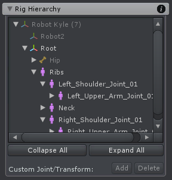
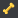
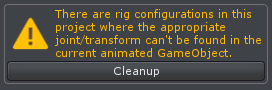

Rig Hierarchy
The Rig Hierarchy shows all joints and transforms that are configured in the current UMotion project. When a joint or transform is selected in the Rig Hierarchy window, it is automatically also selected in the Scene View and vice versa.
Config Mode - Rig Hierarchy
Adding a New Rig
Every time an animated GameObject is selected that has joints/transforms that are not present in the current UMotion project a message box is prompted.

New Rig Dialog
By clicking on Create Configuration those joints/transforms are automatically added to the project.
Icon Description
| Icon | Description |
|---|---|
| Indicates that this is a transform. | |
|  | Indicates that this is a generic joint/bone. Bones are a special case of transforms that manipulate parts of the GameObject's mesh. Generic bones can also appear in humanoid character rigs but they are locked by default. Animating generic bones in humanoid projects is possible but not recommended, as generic bones can't be retargeted. |
| Indicates that this is a humanoid bone. Humanoid characters have some kind of a predefined anatomy. Bones that match this anatomy will be converted into muscles when exporting the animation. This allows retargeting the animation to share it across different characters. Humanoid bones can't be scaled or moved (only rotated). |
Buttons
- By clicking on the arrow symbol next to each joint/transform in the Rig Hierarchy its children are shown/hidden. By holding ALT when clicking on the arrow symbol, all child items are expanded or collapsed.
- The Expand All and Collapse All buttons expand or collapse every item in the Rig Hierarchy view.
- By clicking on the Add button a custom joint/transform is created as a child of the current selected joint/transform. If multiple joints/transforms are selected, a child for every selected joint/transform is created.
- By clicking on the Remove button custom joint/transforms can be removed. Only custom join/transforms can be removed (i.e. those that have been created with the "Add" button).
Custom Joints/Transforms
Custom joints/transforms are displayed with an aqua color in the Rig Hierarchy. They are useful for creating advanced inverse kinematics rigs.
Missing Joints/Transforms
If there are joints/transforms in the UMotion project configuration that are not present in the current selected animated GameObject a warning is displayed. All joints/transforms that are not found in the animated GameObject are displayed in yellow with a warning symbol in the Rig Hierarchy. By clicking on the Cleanup button, all those unused joints/transforms and all according key frames can be deleted.
Cleanup